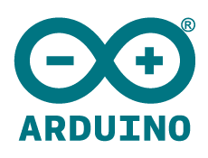

Empresa
postado 14 de dezembro de 2021
A planetec é uma empresa de serviços em automatizados e softwares, para possibilitar que os clientes utilizem a tecnologia a favor de seus negócios. Desde 2021, a empresa é reconhecida pelo comprometimento com o resultado final e preucupação em exceder as expectativas de seus clientes, sua equipe trabalha dentro dos padrões de qualidade e é composta por profissionais dedicados.
Produto
postado 14 de dezembro de 2021 Visando solucionar alguns problemas envolvendo o meio ambiente em nossa cidade a empresa PlaneTec desenvolveu uma lixeira automatizada ultilizando componentes eletrônicos e controle por arduino, para uma melhor acessibilidade. Esta abordagem consiste na adaptação de uma lixeira convencional de modo que a mesma possa responder a um estimulo de uma pessoa e assim realizar o acionamento da tampa, abrindo e fechando a lixeira automaticamente sem a nessecidade de contato com a mesma. Com esse produto atendemos a soluções de problemas e por fim contribuindo também com toda a sociedade.
Dúvidas
postado 14 de dezembro de 2021Você poderia tirar dúvidas sobre nossos produtos com nosso avançado assistente de conversação steve.
Alunos
Diogo Gomes da Silva
José Antônio do Nascimento
Joselane Carlos de Assis
Natanael José da Silva
Rayane de Almeida Santos